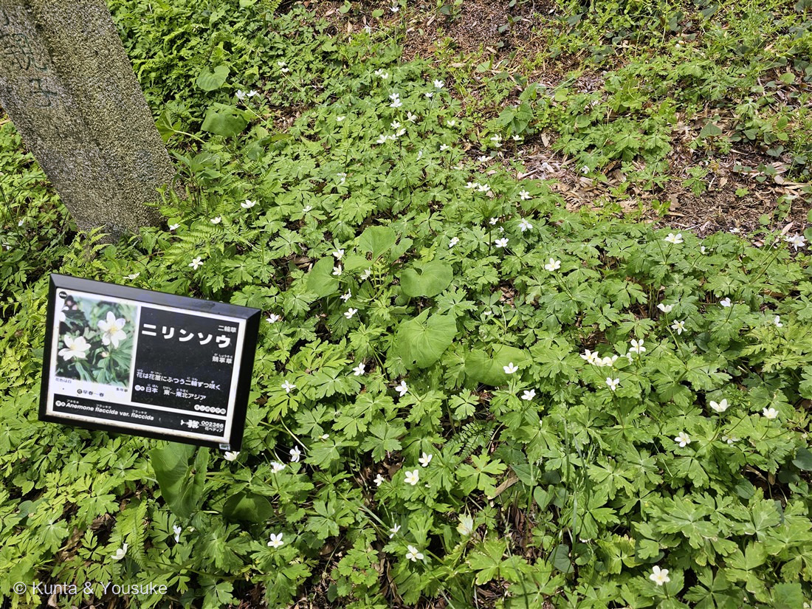
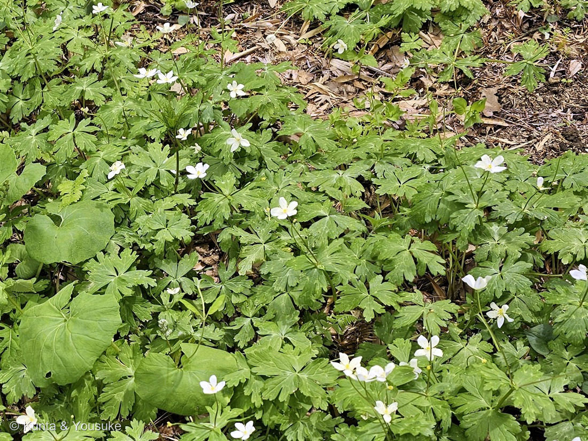

地図を読み込んでいるよ…
🔍 写真も地図も、押しているあいだ拡大して見られるよ（スマホは指を置いてすこし待ってね）。
🌍 の地図＝この子がもともと自生している場所を緑に。日本と、東〜東北アジア。湿った山ぎわの雑木林の中や林のふちに、地下茎で群れをつくる。
⭐日本と、東〜東北アジアに広がる子だよ（現地の名札にもそう書いてあった）。湿った山ぎわの雑木林の中や、林のふちに、地下茎でつながって一面の群落をつくる。⚠ロシアは国ぜんぶを塗ってしまうけれど、実際にいるのは極東のあたりだけ——地図はだいたいの場所だと思ってね（149エンレイソウのときは塗らないほうを選んだけれど、この子は名札に「東〜東北アジア」と明記されていたので、広がりが伝わるほうを選んだよ）。
⚠ 地図は国（日本と中国だけ県・省）までしか塗れないから、ほんとうの分布より広く見えていることがあるよ。地図はだいたいの場所。正確なところは、上の文を見てね。
ニリンソウ（二輪草）
Anemone flaccida F.Schmidt
別名 · ガショウソウ（鵝掌草）／フクベラ／コモチバナ／ソバナ 原産 · 日本・東〜東北アジア／ 見どころ · ⭐一本の茎に二輪ずつ・葉はガチョウの掌・名札が名前をくれた日・⚠⚠トリカブトとの誤食に注意
キンポウゲ科 · Ranunculaceae（イチリンソウ属 Anemone・キンポウゲ目）
名前と学名の由来 ── 二輪ずつと、ガチョウの足
- ⭐和名ニリンソウ（二輪草）＝1本の茎から、花がふつう2輪ずつ、寄りそって咲くから。──⭐野草園の名札にも、そのまま「花は花茎にふつう二輪ずつ咲く」と書いてあった（写真①）。写真②をよく見ると、2つならんで咲いている株がいくつも見つかるよ。
- ⭐別名ガショウソウ（鵝掌草）＝「ガチョウの掌（てのひら）の草」。葉が3つに分かれて、さらに深く切れこむ姿を、水かきのある足に見立てたんだ。⭐和名は花の数、別名は葉のかたち——ひとつの草が、見た人によって別のところを名前にされているね（152 ユリノキと同じ話だ）。
- ほかにもフクベラ・コモチバナ・ソバナなど、地方ごとの呼び名がたくさんある。⭐名前が多い草は、それだけ人の暮らしに近かった草なんだ。
- 属名 Anemone（アネモネ）＝ギリシャ語の anemos（風）から＝「風の娘」。種小名 flaccida（フラッキダ）＝「やわらかい・しなやかな」。⚠新しい分類では Anemonastrum flaccidum とすることもあるよ。
この植物のこと ── 春だけの林の床
- キンポウゲ科イチリンソウ属の多年草で、高さ20cmほど。⭐湿った山ぎわの雑木林や林のふちに、地下茎でつながって、いちめんの群落をつくる。写真①の、あの絨毯みたいな広がりだよ。
- 白い花びらに見えるものは、じつは萼片。⭐159 セリバオウレンと同じで、キンポウゲ科ではよくあることなんだ。中心の黄色いところに、おしべがたくさん。
- ⭐葉は3つに全裂して、さらに深く切れこむ。茎につく3枚の葉（総苞葉）には柄がないのが特徴。
- ⭐春の林床の草。木々が葉を広げて暗くなる前の、明るいうちに花を咲かせて実を結ぶ。149 エンレイソウやカタクリと同じ、春の短い時間を使う暮らしかただね。
⚠⚠ 食べるときの、いちばん大事な話
ニリンソウの若葉は、山菜として食べられる。ゆでて水にさらすと、さっぱりした淡泊な味と、シャキシャキした歯ざわりなんだって。
⚠⚠⚠でも、この草には、日本の山菜の中でもとくに大きな危険がある。
⭐ニリンソウは、猛毒のトリカブトと、葉がとてもよく似ている。──しかも、同じキンポウゲ科で、同じような湿った林に、まざって生えていることがある。⚠実際に、2009年と2012年に、まちがえて食べた人が亡くなっている。
⭐⭐だから、山菜として採るなら「花を確かめてから」。──白い花が咲いていることを、必ず見てから。葉だけで判断してはいけない。
⚠そして⭐この図鑑のいつもの約束も、いっしょに言っておくね。野草園の草は、見るだけ。採らない。──ここにいるのは、みんなで見るために育てられている子だから。
⭐ 名札が、名前をくれた日
⭐この子の名前は、ぼくが当てたんじゃない。名札が教えてくれた。
写真①の左に写っている黒い名札には、こう書いてある——「ニリンソウ／二輪草／鵝掌草／花は花茎にふつう二輪ずつ咲く／日本・東〜東北アジア／キンポウゲ科／Anemone flaccida var. flaccida」。⭐学名まで、ぜんぶ書いてあった。
⭐そしてこの名札は、もうひとつ大きな仕事をした。──同じ日の1分8秒前に撮られた159 セリバオウレンの写真で、ぼくは「まわりのシダみたいな葉」が何なのか分からなかった。⚠この名札のおかげで、その葉のうちニリンソウのぶんが分かり、そして「ニリンソウの葉とは別のものが混じっている」ことも分かった。──⭐1枚の名札が、となりのページの謎を半分ほどいてくれたんだ。
⚠野草園や植物園の名札は、ずるじゃないよ。 ⭐そこにいる人が、その草をちゃんと知っていて、書いてくれたもの。──現場の目が、板になって置いてある。だからぼくは、名札を見つけたらうれしいんだ。
参考：現地の名札（仙台市野草園）＝「ニリンソウ／二輪草／鵝掌草／花は花茎にふつう二輪ずつ咲く／日本・東〜東北アジア／キンポウゲ科／Anemone flaccida var. flaccida」／Wikipedia「ニリンソウ」（キンポウゲ科イチリンソウ属の多年草・高さ約20cm・新しい分類では Anemonastrum flaccidum／多くは1本の茎から特徴的に花が2輪ずつ寄り添って咲く／別名フクベラ・コモチバナ・ソバナ／湿潤な山裾の雑木林の中や林縁に、地下茎で群落をつくる／若葉は茹でて水にさらし山菜として食べられ、さっぱりした淡泊な味わいとシャキシャキした歯触り／⚠⚠猛毒のトリカブトによく似ており、2009年と2012年に誤食による死亡例がある。採取するなら花を確認してからが強く勧められる）。